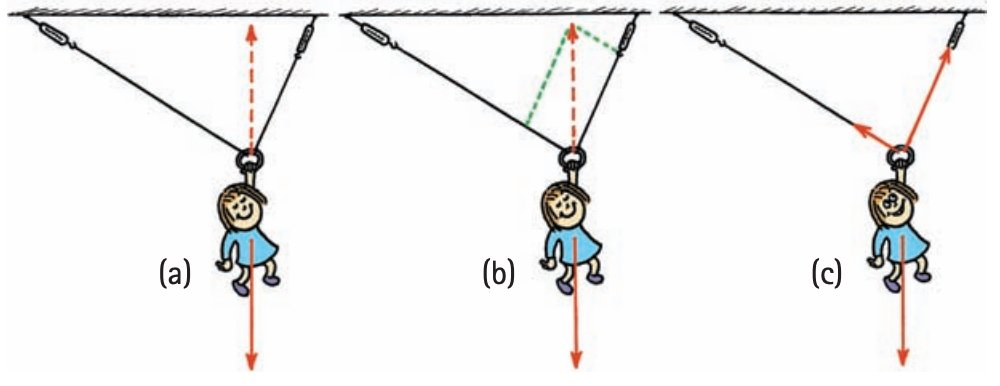
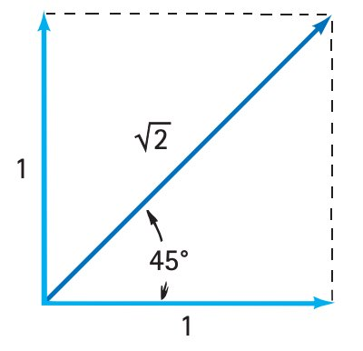

Conceptual Physics Practice 3 1.3
1. A student reports only “the force is 12 N.” Explain what information is missing for a complete vector description.
2. Use the diagram to explain how resultant direction and magnitude depend on the component arrows.

3. Describe a reliable method for finding a resultant from a simple force-arrow diagram.
4. Rank the displayed force arrows by magnitude and state the visual evidence used for the ranking.

5. Use the opposing-force diagram to determine the resultant direction from the relative arrow lengths.

6. Use the diagram to explain what happens when two equal-magnitude forces point in exactly opposite directions.
7. A cart has a 18 N force to the right and an unknown force to the left. The net force is 11 N to the right. Determine the unknown leftward force.
\(F_{\text{net}}=F_{\text{right}}-F_{\text{left}}\)
- 7 N left
- 0 N
- 25 N left
- 11 N right
8. Use the vector diagram to identify which arrow has the greatest magnitude and state how you know.
9. Two students push a cart in the same direction with 18 N and 6 N. Determine the net force and direction.
\(F_{\text{net}}=F_1+F_2\)
10. A student says, “Two equal-length force arrows always give zero resultant.” Use the diagram to critique the statement.
11. A cart has a 20 N force to the right and an unknown force to the left. The net force is 13 N to the right. Determine the unknown leftward force.
\(F_{\text{net}}=F_{\text{right}}-F_{\text{left}}\)
12. Explain why arrow length alone is not enough to determine a resultant force.

13. The opposing-force diagram represents 30 N right and 10 N left. Determine the resultant.
- 20 N right.
- Toward the smaller force.
- Always zero.
- Magnitude can be found but direction never matters.
14. A cart has 22 N to the right and 8 N to the left. Determine the resultant force.
- 14 N right
- 0 N
- 30 N left
- 14 N left
15. A force arrow is redrawn in the same direction but twice as long. What changed about the represented force?
16. Two students push a cart in the same direction with 26 N and 6 N. Determine the net force and direction.
\(F_{\text{net}}=F_1+F_2\)
17. Use the vector diagram. Two opposing forces act on an object. In which direction does the resultant point?
- Toward the larger-magnitude force.
- Toward the smaller force.
- Always zero.
- Magnitude can be found but direction never matters.
18. A cart has 20 N to the right and 6 N to the left. Determine the resultant force.
- 14 N right
- 0 N
- 26 N left
- 14 N left
19. A cart has a 22 N force to the right and an unknown force to the left. The net force is 15 N to the right. Determine the unknown leftward force.
\(F_{\text{net}}=F_{\text{right}}-F_{\text{left}}\)
20. Use the vector diagram. What two features of a force are communicated by an arrow?
- Direction is shown by orientation and magnitude by arrow length.
- Direction is speed and length is time.
- Color gives force size and direction gives mass.
- Length is distance traveled only.
21. The diagram represents 26 N right and 11 N left. Determine the resultant.
22. A cart has 24 N to the right and 8 N to the left. Determine the resultant force.
23. A cart has 20 N to the right and 8 N to the left. Determine the resultant force.
24. A cart has 22 N to the right and 5 N to the left. Determine the resultant force.